全锦赛胜利闭幕
#1 全锦赛胜利闭幕 作者：有志青年 发表时间：2007-10-7 21:34:47
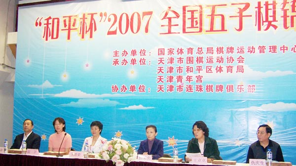
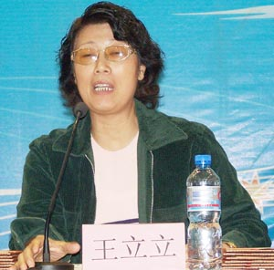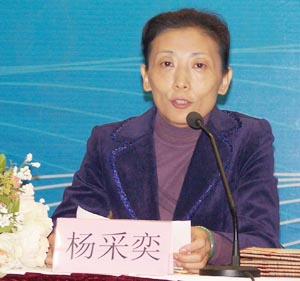
天津围棋协会秘书长王立立主持 总局棋牌中心综合发展部主任杨采弈总结
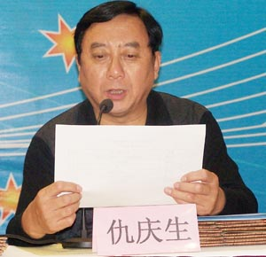
总裁判长仇庆生宣布比赛成绩
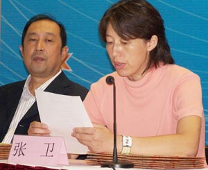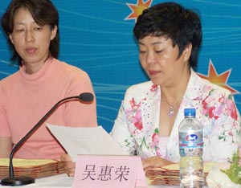
天津和平区体育局副局长张卫宣布优秀组织奖 天津青年宫书记吴惠荣宣布体育道德风尚奖
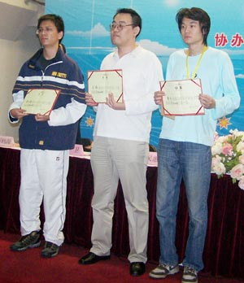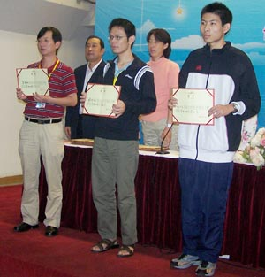
男子第三名黄宇峰、第二名吴镝、第一名曹冬 男子第六名葛凌峰、第五名戴晓涵、第四名仇云飞
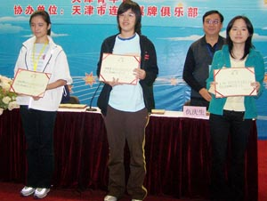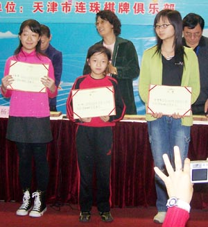
女子第一名郑蔚楠、第二名张萌森、第三名王珏 女子第四名于亚君（代）、第五名刘昭、第六名徐诗倩
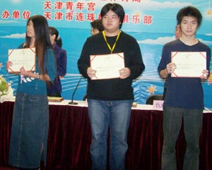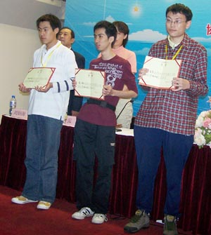
男子第九名李非、第八名朱建锋、第七名王昊天 男子第十二名张轶峰、第十一名黄立勤、第十名樊星岑
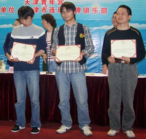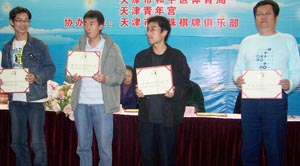
体育道德风尚奖陈戈、刘 新、罗锦伟 体育道德风尚奖盛宏安、隋云亮、杜卫鹏（代） 、田汉法
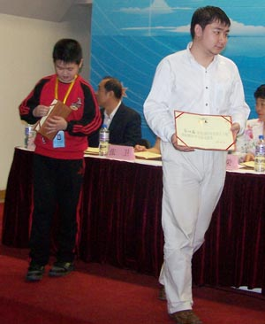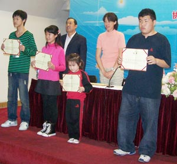
体育道德风尚奖徐嘉琦、崔炳鑫 体育道德风尚奖黄金贤、张钟元、杨镒萌、宁安文
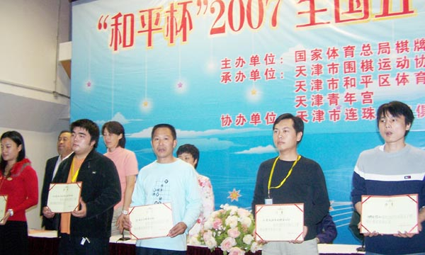
优秀组织奖：（广东聪韵棋院）、秦皇岛快乐连珠俱乐部、河北妙手连珠五子棋俱乐部、那威五子棋俱乐部、天津市连珠棋牌俱乐部、湖南省棋类协会、（上海市围棋协会五子棋委员会、河南省棋牌院）